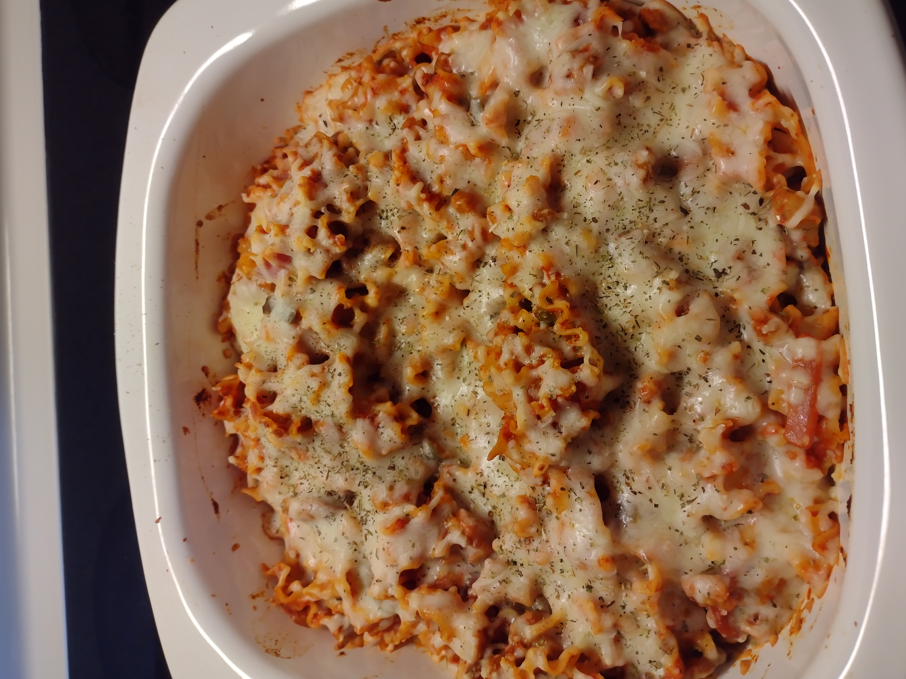

Pizzaghetti

Description
This is a fun and super easy cross between pizza and spaghetti.
Ingredients
- 1 (16 ounce) package spaghetti
- 1 (28 ounce) jar spaghetti sauce
- 1 (6 ounce) package sliced pepperoni
- 1 (6 ounce) can sliced black olives
- 1 (8 ounce) package sliced fresh mushrooms
- 8 ounces shredded mozzarella cheese
Steps
- Bring a large pot of lightly salted water to a boil. Cook spaghetti in the boiling water, stirring occasionally until cooked through but firm to the bite, about 12 minutes. Drain and transfer to a 7x11-inch baking dish.
- Preheat oven to 350 degrees F (175 degrees C).
- Stir spaghetti sauce into pasta until coated; add 2 to 3 layers of pepperoni, olives, and mushrooms on top of spaghetti. Cover the baking dish with aluminum foil.
- Bake in the preheated oven until heated through, about 20 minutes; uncover and sprinkle with mozzarella cheese. Return to oven and continue baking until cheese is melted, about 10 minutes.
Back to homepage